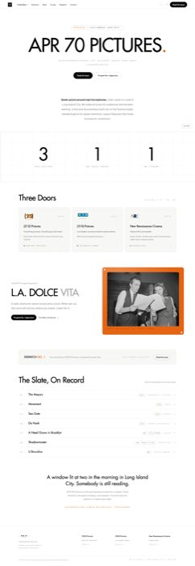
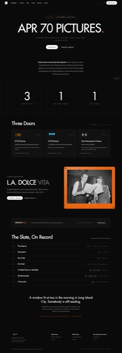
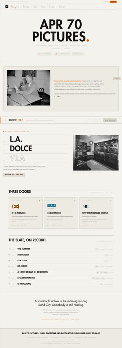
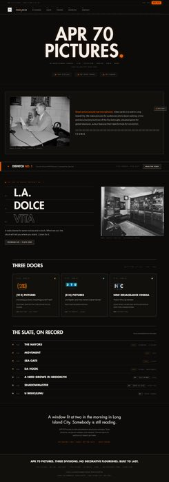
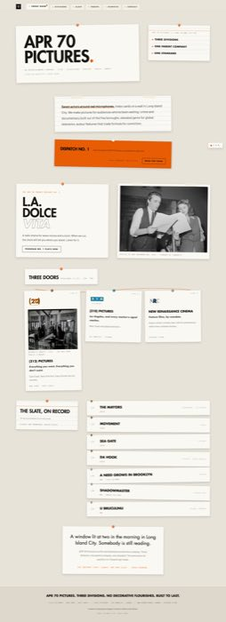
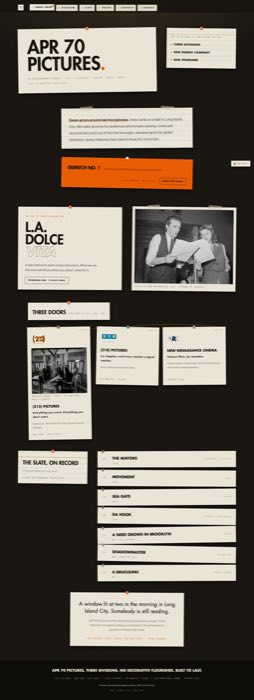
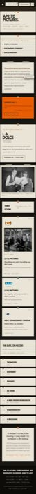
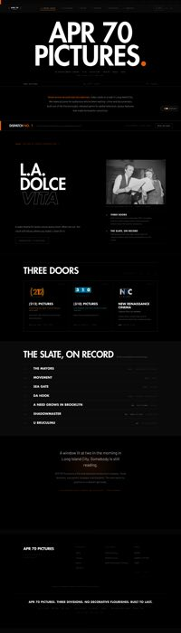
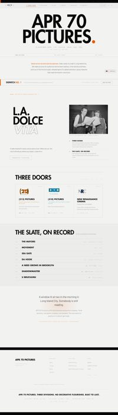

Waves G · H · J · K + orchestratorMatrix 80/80 clean9 commits on local mainNothing pushed, nothing deployed
01
The Direction Gate
Three new theme candidates. Your pick builds; the rest stay mockups.
F · Mission Control
direction-f-mission-control.html · the mandated x.ai direction
APR 70 wearing x.ai's structural discipline: calm Futura display at sentence height, a hairline-grid
stat band where the indicia become giant 3 / 1 / 1 numerals, pill CTAs, product-card doors, news-row slate,
sitemap footer. One orange grain plate with corner handles. Light-first, like the source.

Light · 1440

Dark · 1440Dark · 390
G · On Air
direction-g-on-air.html · original
The front door as a broadcast control room. ON AIR lamp status bar, frequency-ruler nav with an
orange needle on the active page, station-ID nameplate, bezeled instrument panels, channel-module doors with
division-color lamps, broadcast-log slate. Motion is "tuning in": blur-to-locked one-time settles. Dark default.

Light · 1440

Dark · 1440Dark · 390
H · The Writers' Wall
direction-h-writers-wall.html · original
From the company's own line: index cards on a wall in Long Island City. Every block is a pinned
card... ruled stock, division-color pushpins, tape, one sagging orange thread over the doors, seven slate slips.
Dark mode is the 2 a.m. wall; cards stay paper so type never loses contrast. Motion: drop-and-relax settle.

Light · 1440

Dark · 1440

Dark · 390
All three use the site's real copy verbatim, PD imagery with credits, and the locked faces.
The mockups were cut before Cleopatra joined the /310 slate, so their slate lists seven properties; the live
site now lists her. Full-res mockups open from design-source/directions/.
02
The Two Keepers, As Built
Screening Room (default) + Cutting Room, after tonight's fixes.

Screening Room · Dark (house)

Screening Room · Light (work lights)Cutting Room · Dark (bench) · now Futura-ledCutting Room · Light (lab sheet) · now Futura-led
Also verified, no picture needed: Cleopatra on the /310 slate (verbatim title
from the v2 export), custom thin scrollbar sitewide (division-colored on division pages; headless capture cannot
rasterize it, so it was proven by computed scrollbar-color), legacy theme values fall back
to Screening Room, and zero console errors across all 80 matrix loads.
04
Rulings Queue
Orange chips wait on you. Blue chips wait on the other session.
Pick the direction(s) to build: F, G, H, any combination, or none.yours to rulePicked candidates get built as full themes next wave, same as Screening Room was.
Em dashes: 69 unique instances in rendered copy.yours to rule57 on /news (DISPATCH masthead, contents, editor's letter), 10 on /troupe, 2 on /about, 1 on /work.
This is your open label-separator question; agents do not touch copy. Rule allowed-as-header-class or purge.
Cutting Room's nameplate full stop renders gray, not orange.yours to ruleThe B&W law spends its single orange on the reel-head cue. Accept the gray stop, or move the
orange allowance to the nameplate.
Display pill's theme-swatch dot stays orange under Cutting Room.orchestrator ruledRuled acceptable: a grayscale swatch stops communicating what it picks. Override if you disagree.
Two PD items need your one human click.yours to ruleNARA 555751 (rights read Unrestricted, but the record's title says Manhattan Bridge while its
caption says Brooklyn Bridge) and the LOC Fulton St El 1914 item (LOC rate-limited every automated read).
Both documented in the site ledger, neither shipped.
Shadowmaster imagery lane.yours to ruleNo public-domain photograph can serve the premise. Confirm the ComfyUI-object-with-visible-credit
lane and it goes into the next imagery pass.
Two sessions are working this handoff in one checkout.yours to ruleConfirmed by commit forensics. Work has integrated cleanly so far, by luck. Say which session
keeps the wheel. Debts currently sitting in the other session's lane: the font/accent pre-paint fix
(uncommitted in its working tree; until it lands, customized visitors get a flash of default styling), the
half-seeded CMS troupe global that hides the ComfyUI credit behind an empty backstage list, and a CMS logo URL
stored as an absolute localhost:4321 address that will 404 anywhere but a dev machine.
Staging deploy.gated on your goEverything above ships to local main only. Deploy, push, and DNS remain yours alone.